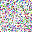
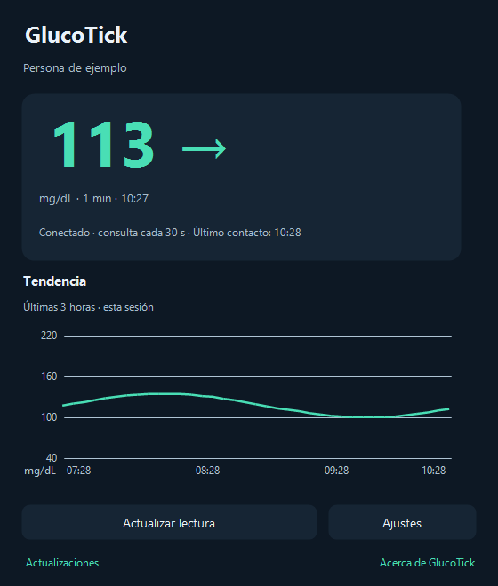
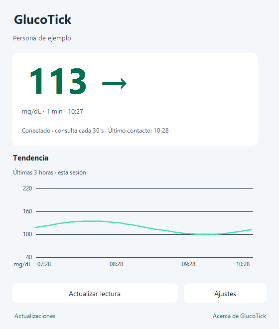
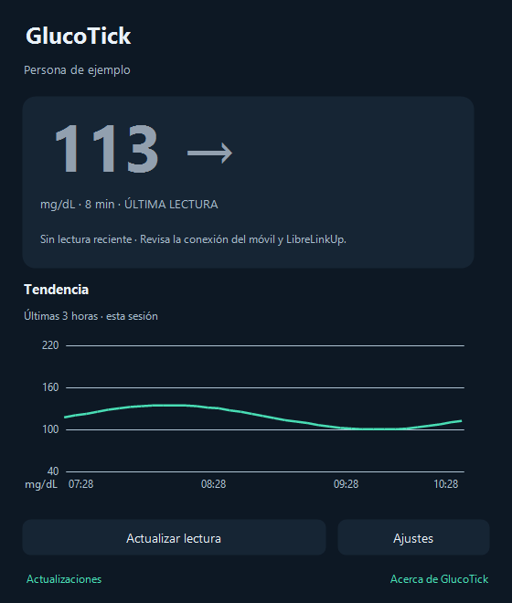
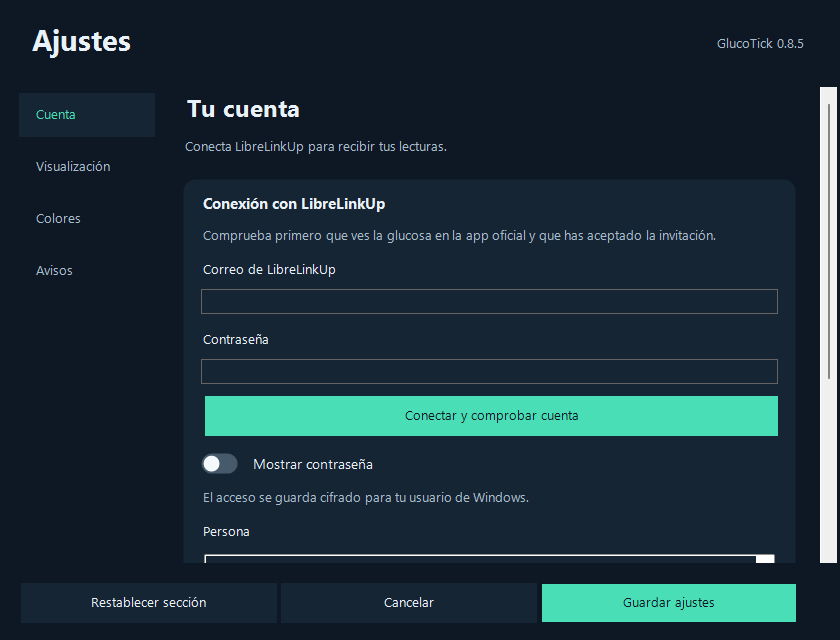
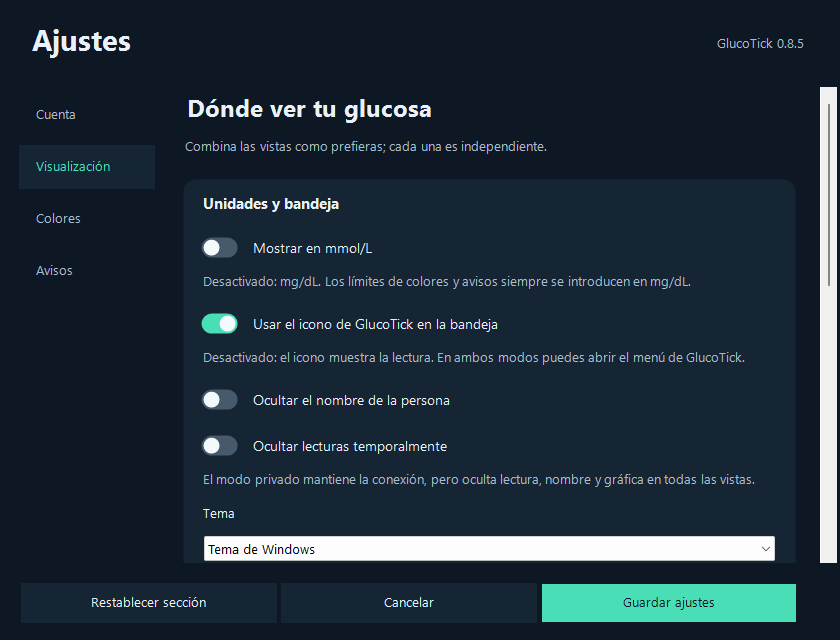
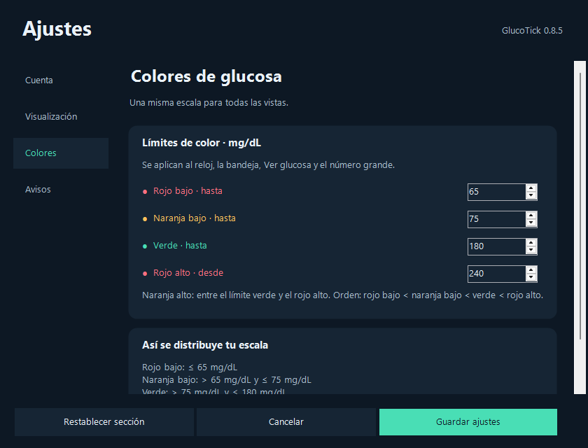
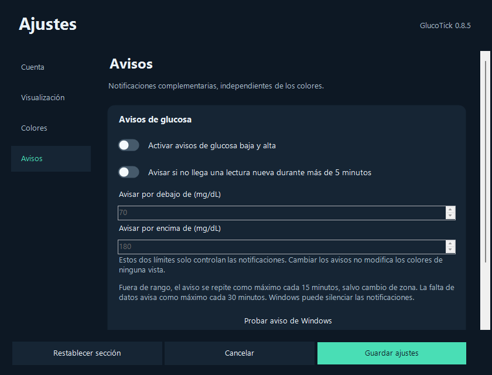
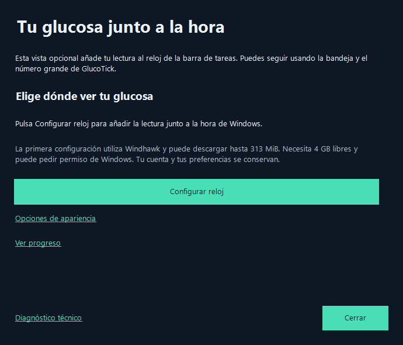

o113
Junto al reloj
La bandeja muestra la glucosa o el icono de GlucoTick. Haz clic para abrir el panel; con el botón derecho accedes a vistas, ajustes y actualizaciones.
Representación de las dos opciones de bandeja
GlucoTickDescargarPARA WINDOWS · CON LIBRELINKUP
Sigue con lo que estás haciendo. GlucoTick mantiene tu lectura a la vista, junto al reloj de tu PC.
Windows 10 / 11 · x64 · Descarga gratuita

No necesitas mantener una ventana abierta.
Una mirada al reloj. Y vuelves a lo tuyo.A TU MANERA
Activa una, dos o todas. El número grande y el icono funcionan sin instalar Windhawk.
La bandeja muestra la glucosa o el icono de GlucoTick. Haz clic para abrir el panel; con el botón derecho accedes a vistas, ajustes y actualizaciones.
Representación de las dos opciones de bandejaLa lectura en la barra de tareas, con fondo transparente. Ajusta el ancho, la posición y el monitor para encontrar tu sitio.
Captura del indicador con datos ficticiosLa integración opcional con Windhawk añade la glucosa al propio reloj de Windows 11. Un asistente te guía para configurarla.
Qué necesitas →Representación de la integración; el estilo puede variarCUANDO QUIERES VER MÁS
Abre el panel para ver el valor, la flecha de tendencia, la hora de medición y cuánto tiempo ha pasado.

LA ANTIGÜEDAD IMPORTA
Los minutos siguen aumentando desde la hora de la medición. Volver a consultar el mismo dato no reinicia el contador.
Después de más de cinco minutos, la última glucosa se muestra en gris en todas las vistas. Puede faltar conexión en el móvil, en el sensor o en LibreLinkUp.
Comprueba el móvil y LibreLinkUp. Puedes activar un aviso por falta de datos en Ajustes.

TU CONFIGURACIÓN
Unos ajustes para cada necesidad. Los colores son comunes a todas las vistas; los límites de avisos solo controlan notificaciones.
Comprueba tu cuenta de LibreLinkUp y selecciona de quién quieres ver las lecturas. Puedes guardar otras preferencias y conectar más tarde.

Tema claro, oscuro o del sistema; mg/dL o mmol/L; icono o glucosa; número grande y monitor. Elige iniciar con Windows, ocultar el nombre o activar el modo privado.

Configura cuatro límites para las zonas de color. Se aplican al panel, la bandeja, el número grande y el reloj. Una vista previa ayuda a comprobarlos. Los límites se introducen en mg/dL, también si visualizas mmol/L.

Notificaciones opcionales por glucosa baja o alta y por falta de datos recientes. Ajusta sus límites y prueba un aviso de Windows.

Interfaz 0.8.5 capturada en Windows Sandbox con datos ficticios. Pulsa una imagen para verla completa.
SIN COMPLICACIONES
Descarga el archivo GlucoTick-Setup de la última publicación y ábrelo. El instalador te guía; no hace falta extraer un ZIP.
Acepta la invitación de seguimiento en LibreLinkUp y comprueba que allí ves las lecturas. En GlucoTick, abre Ajustes → Cuenta, conecta y selecciona la persona.
Guarda los ajustes y empieza por la bandeja o el número grande. Si quieres la glucosa dentro del reloj, configura la integración opcional.
Windows 10 versión 2004 o posterior, o Windows 11 · PC x64 · .NET Framework 4.8 · Conexión a Internet · Cuenta de LibreLinkUp con acceso a las lecturas.
OPCIONAL, DE VERDAD
Windhawk es un programa externo que permite personalizar Windows. GlucoTick lo utiliza para añadir la lectura al reloj de Windows 11 x64.
Abre Ajustes → Visualización → Configurar el reloj de Windows. El asistente explica qué va a preparar y comprueba si el reloj está listo.
GlucoTick funciona sin Windhawk. Puedes configurar el reloj más adelante.

ACTUALIZACIONES
Una tarjeta muestra la versión disponible. También aparece en el menú del icono y puede avisarte con una notificación de Windows.
Abre Ver novedades y descargar para consultar los cambios y decidir cuándo instalar. Durante la descarga puedes ver tamaño, progreso y velocidad.
Cada apertura del panel o de Actualizaciones comprueba si hay una versión nueva. GlucoTick verifica el paquete, cierra la aplicación para actualizar y conserva la cuenta y las preferencias. Guarda antes los ajustes pendientes.
Ver la última publicación ↗PRIVACIDAD
El correo y la contraseña se guardan cifrados para tu usuario de Windows. Las lecturas y la gráfica permanecen en memoria durante la sesión.
El modo privado oculta temporalmente el nombre, los valores y la gráfica en todas las vistas y suspende los avisos de glucosa. La conexión sigue funcionando.
La aplicación conecta con LibreLinkUp para las lecturas y con GitHub para las actualizaciones y dependencias. No incluye telemetría propia ni envía diagnósticos automáticamente.
Leer la información de privacidad →POR SI TE LO PREGUNTAS
No. Es un visor complementario independiente de Abbott. Conserva la aplicación y las alarmas oficiales de Libre. Los avisos de GlucoTick son opcionales y Windows puede silenciarlos.
Han pasado más de cinco minutos desde la medición. Se conserva el último valor, pero ya no se presenta como reciente. Revisa si LibreLinkUp recibe nuevas lecturas y la conexión del móvil; los minutos siguen aumentando aunque una consulta responda con el mismo dato.
Solo para integrar la glucosa dentro del reloj de Windows 11. La bandeja, el panel y el número grande funcionan sin él. Puedes combinar las vistas libremente.
Usa Configurar / reparar el reloj en el panel o accede desde Visualización. El asistente comprueba la integración y ofrece la acción adecuada. Si Windhawk tiene los mods pausados, reanúdalos allí. Cuando veas El reloj está listo, pulsa Listo.
La gráfica usa las lecturas recibidas en la sesión actual; no descarga un historial completo del sensor. Necesita recibir al menos dos lecturas para dibujar la tendencia. Al salir de GlucoTick, ese historial de sesión se pierde.
No. GlucoTick sigue funcionando junto al reloj. Para cerrar el programa, haz clic derecho en el icono y elige Salir. Si el icono está escondido, abre la flecha de la bandeja de Windows y arrástralo junto al reloj.
Los instaladores actuales no tienen una firma de editor de confianza de Windows. Descarga desde las publicaciones de este repositorio. Cada paquete incluye su SHA-256 para comprobar la integridad; un hash no sustituye a una firma de editor.
Usa Aplicaciones instaladas de Windows. El desinstalador permite conservar o borrar la cuenta y los ajustes. La integración del reloj se desactiva; Windhawk no se elimina.
Consulta las notas de las versiones o abre una incidencia. Indica la versión y Windows. No incluyas contraseñas, correos, lecturas personales ni registros sin revisar. Acerca de permite copiar un diagnóstico sin datos de cuenta ni de glucosa.
LISTO PARA TU ESCRITORIO
Elige el Setup. Los archivos «Source code» no son instaladores.